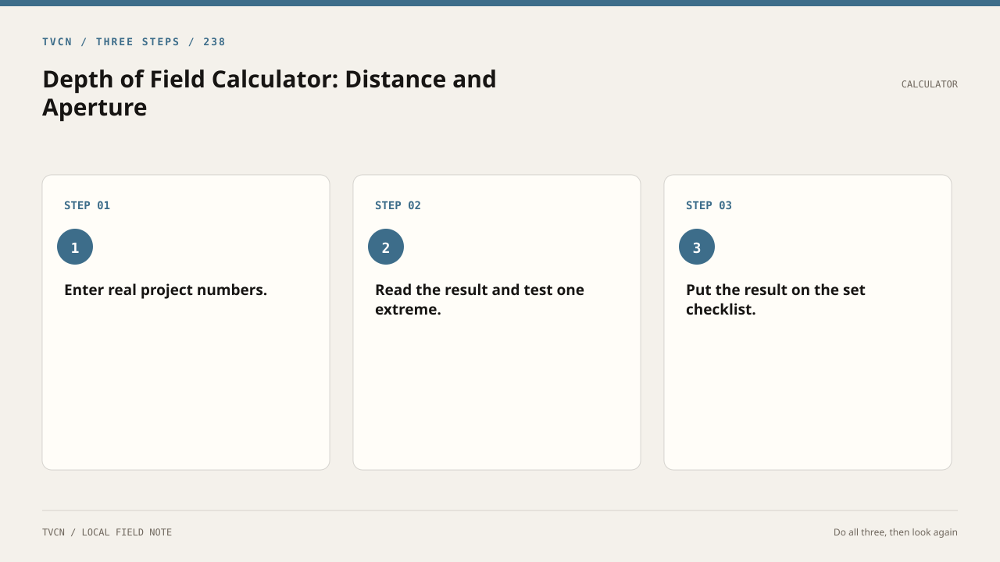

Formula
Hyperfocal H = f × f ÷ (N × c) + f, where f is focal length in mm, N is f-number and c is the circle of confusion (0.03mm for full frame). At focus distance s, near = H × s ÷ (H + s), far = H × s ÷ (H - s) when s is below H.
Example: full-frame 50mm at f/2, focused at 3m: H = 50×50 ÷ (2×0.03) + 50 ≈ 41,717mm (41.7m); near ≈ 2.8m, far ≈ 3.2m, about 0.4m of depth.
On set
- To keep subject and background sharp, stop down or move back; do not only switch to wide.
- To separate the subject, get closer, open up and move the background away.
- The result is theoretical; lens aberrations and viewing size still matter.
Limits
Do not replace a monitor with a phone calculator; c changes with format, and crop modes change the result.
Three-step flow

On set
Enter focal length, aperture, and subject distance. Read the depth of field before deciding whether the actor moves.
Do this
A depth-of-field calculator starts with subject distance, then aperture and focal length; move the subject and everything changes.
- Enter focal length, aperture, and subject distance.
- Read the depth range.
- Then decide whether the actor can walk.
Avoid
Do not adjust aperture alone for depth; one meter of subject movement changes it.
Image note. Covers, diagrams and step images on this page are editorial illustrations or structure diagrams, not photographs of a test performed here; they are not evidence of measured gear performance. Where an image is AI-assisted, the caption says so. Read the test conditions in the text before treating an image as proof.